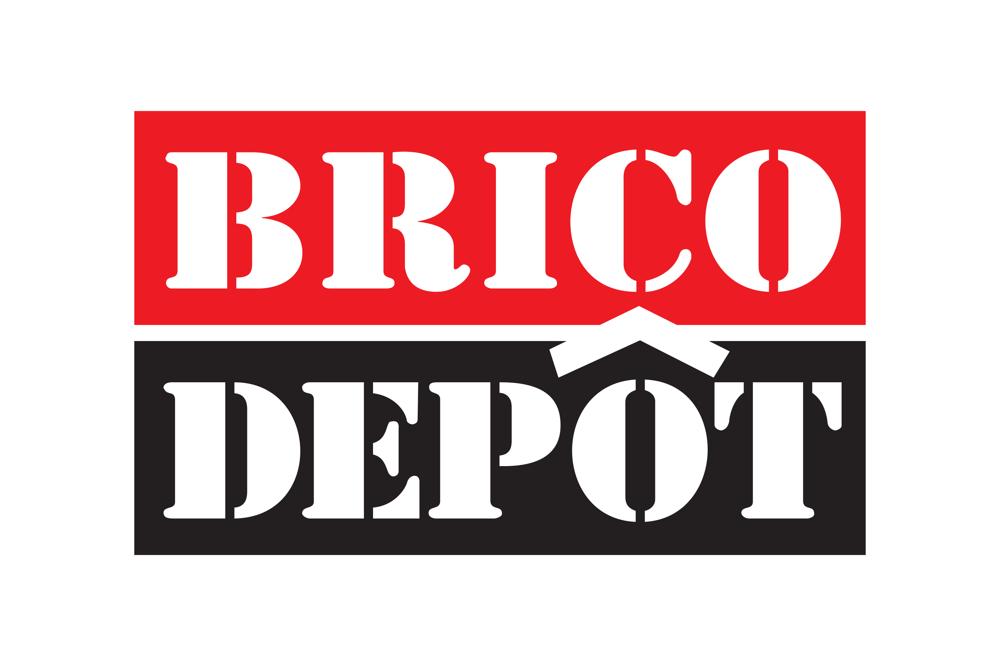
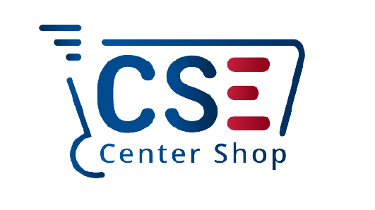
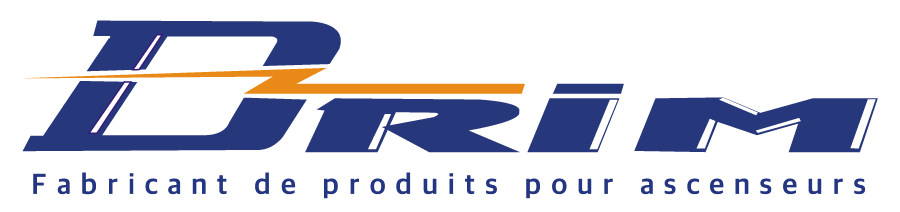
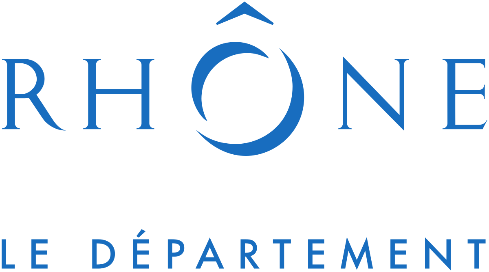

Emploi actuel
Pendant mes études supérieures

Contrat étudiant signé chez Brico-Dépôt
Depuis maintenant deux ans, je travaille tous les samedis ainsi qu'un dimanche sur deux à Brico-Dépôt Saint-Priest. En effet après avoir travaillé pendant les grandes vacances ; l'entreprise m'a proposé de signer un contrat étudiant pour travailler en tant que vendeur tous les week-ends.
- Date: Été 2020 à maintenant
- Catégorie: Vente, relation client
- Adresse entreprise: 198 Route de Grenoble, 69800 Saint-Priest
Stage pendant mes études supérieures
Pendant mon cursus en BTS SIO

Stage dans le développement informatique chez CSE CenterShop
Dans le cadre de ma deuxième année de mon BTS SIO à l’école ORT Lyon 8ème, j'ai réalisé mon stage dans une entreprise ayant une marketplace pour exercer son activité. Cela m’a permis de me former aux métiers de développeurs informatiques et webmasters que j'ai découvert et que ma formation propose comme débouché. Les missions de Chhoeurng m'ont attiré particulièrement car j’ai pu appliquer les connaissances que j’ai acquises en développement sur mes deux premières années de BTS, et en appréhender de nouvelles.
- Date: du 10/01/2022 au 18/02/2022 - 6 semaines -
- Catégorie: Web, Twig, HTML/CSS
- Adresse entreprise: 55 Rue Baraban, 69003 Lyon

Stage dans le référencement SEO chez Drim France
Mon stage s’est déroulé au sein du service informatique du 25/05/2021 au 06/07/2021. Mon travail s’est principalement dirigé sur le site Drim.fr qui est le site vitrine de l’entreprise. L’entreprise possède un site marchand : MyDrim.fr qui servira de référence tout au long du stage Le but étant la mise à jour des produits du site vitrine (Drim.fr) grâce au catalogue et MyDrim.fr
- Date: du 25/05/2021 au 06/07/2021 - 6 semaines -
- Catégorie: SEO, référencement naturel
- Adresse entreprise: 84 Av. Franklin Roosevelt, 69120 Vaulx-en-Velin
Stage pendant mon lycée professionnel
Pendant mon cursus en Bac pro SN
Stage publication de produit en ligne chez Drim France
En troisième année de baccalauréat professionnel SN au lycée ORT, j’ai effectué mon stage au sein de l’entreprise DRIM France, située au 84 Avenue Franklin Roosevelt à Vaulx-en-Velin, du 28/10/2019 au 06/12/2019. Grâce à cette expérience pratique, j’ai eu l’opportunité de découvrir le métier de technicien, graphiste et développeur.
- Date: du 28/10/2019 au 06/12/2019 - 6 semaines -
- Catégorie: Mise en ligne de produit, retouche photo
- Adresse entreprise: 84 Av. Franklin Roosevelt, 69120 Vaulx-en-Velin
Stage technicien chez LDLC Saint-Priest
En deuxième année de baccalauréat professionnel SN au lycée ORT, j’ai effectué mon stage au sein du magasin LDLC Saint-Priest, située au 4 rues champ DOLIN à Saint-Priest, du 20/05/2019 au 05/07/2019. Mon stage s’est déroulé au sein de l’atelier. Grâce à cette expérience pratique, j’ai eu l’opportunité de découvrir le métier de technicien/conseiller et de voir la relation clientèle.
- Date: du 20/05/2019 au 05/07/2019 - 7 semaines -
- Catégorie: Montages et réparations ordinateurs
- Adresse entreprise: 4 Rue Champ Dolin, 69800 Saint-Priest

Stage maintenance informatique à la DRAAF Auvergne-Rhône-Alpes
Mon second stage, d’une durée de trois semaines a été effectué au sein de la Direction Régionale de l’Alimentation de l’Agriculture et de la Forêt Auvergne Rhône-Alpes (DRAAF) du 03/12/2018 au 21/12/2018. Grâce à cette expérience pratique, j’ai eu l’opportunité de découvrir la polyvalence du métier de technicien.
- Date: du 03/12/2018 au 21/12/2018 - 3 semaines -
- Catégorie: technicien, réparation et maintenance
- Adresse entreprise: 165 Rue Garibaldi, 69003 Lyon

Stage de technicien support au Direction des Usages Numériques du Rhône
En première année de baccalauréat professionnel SN au lycée ORT, j’ai effectué mon stage au sein de la Direction des Usages Numériques du Rhône, située au 146 rue Pierre Corneille à Lyon, du 28/05/2018 au 06/07/2018. Mon stage s’est déroulé au sein du Service Informatique. Grâce à cette expérience pratique, j’ai eu l’opportunité de découvrir le métier de technicien support.
- Date: du 28/05/2018 au 06/07/2018 - 6 semaines -
- Catégorie: technicien, réparation et maintenance
- Adresse entreprise: 149 rue pierre corneille 69003 lyon